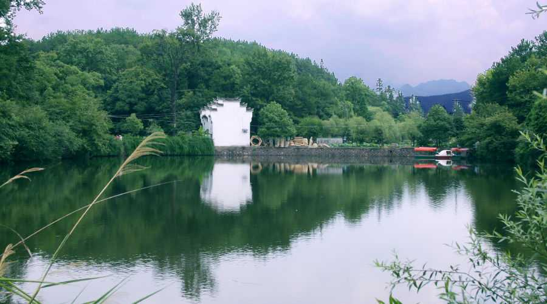

关于旅行【1】
#关于旅行#【1】
司马洪武 发表于 2019年4月16日 13点19分

每逢节假日，成千上万的都市人都选择旅游来度过难得的假期，旅游度假已经成为了都市人的一种潮流。
然而，许多人旅行归来后，总有这样那样的抱怨，抱怨最多应该是感觉旅游目的地没有传说中的那么美好。对此，我想说的是——旅行，不只是看风景，更应该是沉淀一下我们纷杂的心情！
如果你很羡慕（最好只是羡慕）别人比你成功，那你就来看看黄果树瀑布吧！黄果树瀑布之所以举世闻名，凭的就是一股面对绝壁依然前赴后继地纵身跳下的万丈豪情！所有能够功成名就的人们，都具备这一股豪迈精神，明明知道前面困难重重，他们依然奋不顾身前行。
如果你觉得社会对你不公，世人都在为难你伤害你，那你就来夜郎洞来看看这里瑰丽的石花石笋吧！当你看到这些瑰丽珍品时，在感叹大自然的鬼斧神工的同时想一想，这些石花石笋，哪一块没经历过风雨的百般侵蚀？只是他们在被侵蚀得体无完肤的同时去除了渣滓生出了新的结晶，才会变得如此亮丽。
如果你认为身处绝境，感觉没有希望时，那你就到天星桥来看看吧！树木在石头上按理说是无法生长的，但你看这里的每一棵树，不但生长得枝繁叶茂，甚至还用自己的根系将本来是阻挡它生长的巨石完全包裹，利用这些巨石使它们变成了让人叹为观止的奇迹。之所以这样，是它们在困难中不断探寻生存的土壤、不断的壮大自己。
如果……
如果我们每一次旅行，不光是为了看风景，而是为了沉淀一下自己的心情，那么每一个景点都会给予我们人生启迪！从而也会让我们的每一次旅行充满了积极的意义！
关于旅行【2】
#关于旅行#【2】
张三武 发表于 2019年4月15日 15点42分

旅行之于我，有着特别的意义。旅行给我的感觉，宛如舌尖上别样的味道。
我第一次旅行，发生在大二，我们班的学委，某一天鬼使神差地跑到我面前，问我想不想去大连，那时我也鬼使神差地随口答应了，也许是憋得太久，也许是真想出去看一看。那次旅行算是比较尴尬的，我被学委的闺蜜误会成了学委的男朋友，整个旅行那个女生都贼兮兮地对着我傻笑，但大体来说，可圈可点，使我从此迷上了旅行，一发而不可收拾。
记得那次行程只有匆匆两天，第一天去了欢乐谷，第二天去了大连极地海洋馆。当我第一次见到蔚蓝的大海时，我整个人都酥了，海风肆意地吹着我的头发，使我全身的毛孔都得到了彻底放松，那一片蔚蓝，抹去了我心头沉积的一层灰，仿佛整颗心被重新激活，又有了如孩童般鲜活的跳动。当我第一次见到可爱而憨厚的白鲸时，我的心顿时解封，顷刻间变得柔软而安详，看着它圆滚滚的身子，分开湛蓝的海水，我的心也随着水波一起荡漾。同时我们敬爱的学委也抛去了原本沉默的个性，撒开欢地玩耍着，摆出各种新奇古怪的pose，仿佛和美丽的景色有些格格不入，但却显得那么自然。
那次旅行让我感慨良多，我似乎找到了隐藏在沉默寡言中的自我，我发现原来我也可以如此快乐，当你抛开所有烦心事尽情地玩耍时，你整个人会有一种重生的错觉，会发现生活原来可以如此快乐，生命原来可以如此灿烂而美好。当你沉醉在美景中时，你的大脑得到了彻底地放松，山风可以从左耳进右耳出，花香可以从鼻孔进从嘴巴出，你的整个身体仿佛融化在这片一望无垠的美景中，那一刻，你才觉得你真正地活着，脚踏着大地，心游于苍穹。
第二次旅行，相对于第一次就充分多了，我事先设计好了路线，找到了特色的美食，寻到了最佳的景色，再约上最好的哥们，一起前往，因为和知己在一起，所以没有任何的约束，也没用任何的不快，我的那些稀奇古怪的点子，我的朋友都欣然接受，使我们玩得特别畅快，特别尽兴，我想这才是最完美的旅行。
我认为最完美的旅行，第一是和自己的知己或者爱人前往，第二是自己独自上路。自己独自上路，你可以完全遵照自己的意愿，天南海北地四处游玩，只是相对于第一种稍显落寞，但人这一生，能遇到投缘的知己谈何容易，但又不能亏待自己，时间不等人，日子不等人，如果那个知己永远不出现，是否要永远呆在原处呢？对于我来说，我不愿意，所以我会选择后者。
旅行不是盲目跟风，旅行不是炫耀财富，旅行是一种生活，是一次挖掘自身的过程。人也许并不能完全认识自己，在一次次旅行的过程中，我们有机会好好思考，在面对壮丽的美景时，我们的心胸会变得无比开阔，当我们了解到自身的渺小时，当我们知道生命的短暂时，那个尘封已久的真实，就会渐渐浮出水面。人的心需要刺激，人的心需要激活，当你重复着每天单调的日子时，你的心会变得迟钝，你会很难发现美，很难发现好，当你苦闷时，犒赏自己一场旅行吧，让沉睡的心灵，重新起飞，在一次次激活心灵的过程中，你就会渐渐领悟，生命那斑斓的颜色。
关于旅行【3】
#关于旅行#【3】
欧阳迅雷 发表于 2019年4月14日 09点44分

行走于茫茫人海中，步履匆匆，忙碌的生活总是令人难以平静下来，无暇顾及心的情怀。郁闷和无奈还会不时的侵袭我们的心灵空间，让人顿感困惑，感伤不已。此时，不妨放慢一下脚步，给自己营造一个宁静的空间，让心灵去旅行。
让心灵去旅行，你可以切一杯清茶，捧一杯好书，读几篇好诗词。漫游在书中的斗转星移，徜徉在诗词中的亭台轩榭，平平仄仄。你可以和诗人一同站在祖国的大好河山之前，领会“飞流直下三千尺，疑是银河落九天”的磅薄气势。
你可以仰望当年的那轮中秋明月，对友人遥寄“但愿人长久千里共婵娟”的美好祝愿;你可以做一只小小的纸船，在爱的海洋里流连千里;你可以成为天边的一朵云，悠闲自在的畅游在蓝天丽日中悉数情怀。
让心灵去旅行，你可以展开一幅幅文学史波澜壮阔的画卷，观秋风来临之时的那间草堂，读那份至真至纯的忧国忧民情怀;你可以把目光放在西子湖美丽的波光潋滟的情景中，也可以放眼浩瀚沙漠中直冲云霄的那缕孤烟，那轮红日。
也可以领略北国壮丽奇特的雪景，感受“千里冰封，万里雪飘”的境界;也可以沉浸在江南烟雨绵绵的小巷中，看精致的园林，小桥流水人家，听丝竹笛子的悠扬诉说;也可以在七夕到来时，在瓜棚下听牛郎织女的绵绵情话;也可以走进秦朝的长城，在孟姜女哭倒的那段长城脚下，与一段历史对话。
让心灵去旅行，你可以沉醉在自然的风光中，感受被风拂过的一个个季节，在雨中品味湿润的诗意，在大雪纷飞漫天飞舞着白色精灵的世界中踏雪寻梅，踩出一行行古典的诗句;在蒙蒙烟雾中体味朦胧的美，可以尽情的享受早晨新生的万丈光芒，可以沐浴在晚霞绚丽的氛围中，编织美丽的童话。
让心灵去旅行，你可以跨越时空隧道，穿过历史的门槛，站在岁月的河流上，回响一首首跌宕起伏的歌曲。楚大夫沉江前的吟诵“举世混浊我独清，众人皆醉吾独醒”仿佛还在汨罗江畔声声撞响至死不渝的爱国情怀。
曹孟德碣石山上俯瞰沧海，“日月之行若出其中，星汉灿烂，若出其里。”的铮铮誓言，感动了那年的江湖纷争;张继那年在那个失眠夜的寒山寺下敲击出的感伤钟声，还那样清晰的叩响在文人墨客的心门上。
神游千万年的时光隧道，你可以跟李白一起送别王伦时吟咏深胜桃花潭水的友情，与文天祥一起回到零丁洋里，感叹身世浮沉雨打萍的际遇，与范仲淹同登岳阳楼，“不以物喜不以己悲”一同勉励。还可以到巴比伦的空中花园，埃及的金字塔，领略神奇的异国风情。
让心灵去旅行，给自己插上一双想象的翅膀，自由的飞翔在过往与未来的时空之上，让现实的不悦与愁云，统统烟消云散，跑到九霄云外。让我们困倦的心灵得以安详的喘息，恬淡自若，宁静自在。
朋友，不妨让你的心灵经常抛开世俗的羁绊，寻觅一份自由自在的天地，让心灵去旅行，让心去放飞，这样你的世界一定会更为美丽！
欢迎联络！
“人生三境界”语出王国维《人间词话》。第一境界是“立”、第二境界是“守”、第三境界是“得”。第一境界是立志、是下决心，只有具备了这个条件才会有第二、第三境界。
第一境界
“昨夜西风凋碧树。独上高楼，望尽天涯路。”
第二境界
“衣带渐宽终不悔，为伊消得人憔悴。”
第三境界